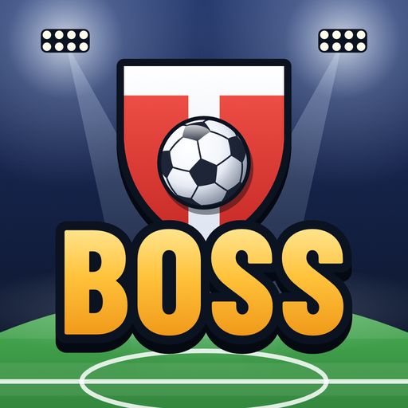

English
DestekGizlilik PolitikasıKullanım Koşulları

Touchline Boss
iPhone için idle futbol menajerliği · Yakında
Maçlar kendiliğinden oynanır; siz kulübü yönetirsiniz. Tribünleri, sponsorları ve yayın anlaşmasını büyütün, kadronun her hattını çalıştırın, antrenör işe alın, yıldız oyuncu bulun, dizilişi ve oyun stilini seçin. Ligi kazanın, üst lige çıkın ve kulübünüzü amatör ligden Şampiyonlar Kupası'na taşıyın.
- Canlı anlatımlı maçlar, yağmurlu ve gece maçları, derbiler ve VAR
- Dünya Kulüpler Kupası'na uzanan ligler ve kupalar, yönetim hedefleri ve Şöhretler Müzesi
- 20 dilde oynanır